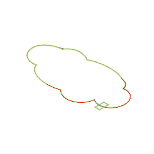

Week 2: Laser Cutting
Hi! My name is Kyle Sanok, a senior at Harvard College, and welcome to my website! This site is primariliy built for my class titled Physics 70: Introduction to Digital Fabrication, where I'll be building, coding, crafting, and making throughout my final semester on campus! Join me in this journey to stay up to date with my progress!
Documentation Week 1:
During the first week, out task was "Using a breadboard, build a simple circuit and learn something about it. Measure voltages using a digital multi-meter."
Here is a picture of my finisehd circuit:
The first step in constructing this circuit was gathering these materials:
- Breadboard
- LED
- Wires
- Resistor
- Power Source
- Voltmeter
From these, I played around with creating a cuircuit to make my LED light up, as I ensured that each "highway" of wires in the underlying bread board connected, and I added a resistor and LED to the mix. We started out with 3V of energy, and measured the change in voltage at different parts along our circuit. Next time, I wish to take more pictures and better document my actions, as I had difficulty gathing and assembling all the pieces at first.
To calculate the current, we used Ohm's law, a "law stating that electric current is proportional to voltage and inversely proportional to resistance." Thus as we had a 1000 ohm resistor (the tan object in our circuit), we placed the two chords of the voltmeter before and after the resistor to get the value of 0.666. Although I have to go back and check the number of decimals we chose to show. Thus putting this into a mathematical equation:
V = R*I
0.666 = 1000*I
I = 0.666/1000
Current = 6x10^(-4) amps
Lastly, we measured the voltage directly after the LED and got a value of 0. This implies that the LED took the last remaining voltage from our circuit as power, showing that Voltage decreases as we descend down the circuit flow.
Below is a photo of my friend, Sean, testing his system!

Final project ideas:
- A product that automatically goes through and likes instagram photos on phones which could help users grow thier instagram following.
- Some tool to help archaeologists write better notebooks, or a classroom archaeology kit to teach students about the field.
- 3d printed plant potting
- Some new type of hat